The firm hired a dozen interns for the summer and could not figure out what to do with them. So they handed them to Luke.
They knew nothing. Not the clients, not the history, not where anything was kept. They learned fast. They never got tired. They were positive to a degree that unsettled people. And there were enough of them that Luke could finally do the parts of the job he never had time for. The second pass. The deeper research. The rigor nobody budgets for.
Most of the firm still treats them as a babysitting problem. Luke runs them like a team.
Each episode is one day with the interns. Tonight he has finished a long one. The piece is a big one: a signature argument about how these new AI tools are burying the world in slop. He is meeting Sandra for dinner.
The Interns · Scene One · Red Team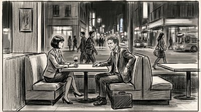
[Sandra was already at the table when I sat down.]
(dry)
“How are the interns?”
“Good. Tired, maybe. I ran them hard today.”
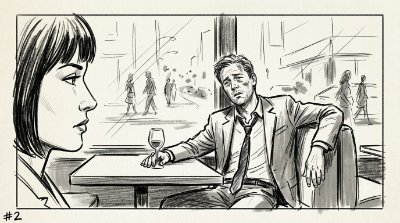
“Do they get tired?”
“One of them started to drift on in a long meeting today, but honestly I don't even think they sleep.”
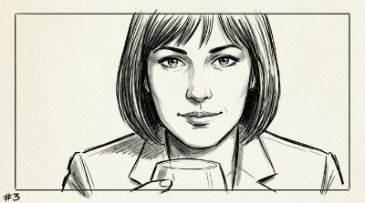
“That must be nice.”
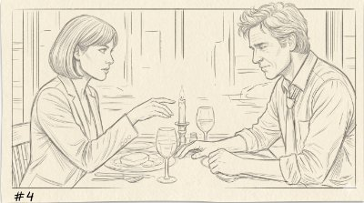
[She leaned forward slightly.]
“So what happened.”
[Not a question. Twenty-some years and she can hear it before I say anything.]
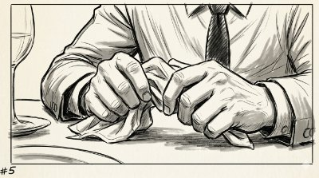
“Framing problem. I had a frame I liked and I couldn't get it to hold. Kept pushing on it with the team, kept trying different angles.”
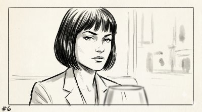
“How long?”
“Long enough that I started thinking maybe the frame wasn't the problem.”
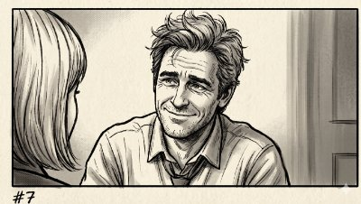
“Meaning you were the problem.”
“Meaning I hadn't said it clearly enough yet. Even to myself.”
[Sandra nods slowly. She has heard versions of this before.]
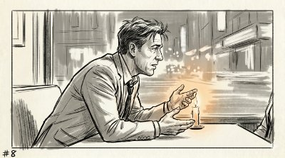
“So I did the thing you always tell me to do. Got an outside view. Someone with no history on the project. Had to lay it out again from the beginning.”
“And?”
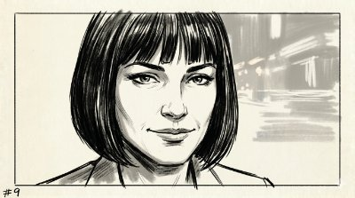
“I could feel it when it started working. The questions changed. The pushback got more specific.”
[Sandra takes a slow, thoughtful sip of her wine.]
“So your intern fixed it.”
“It told me I was overclaiming. I thought I'd found a new ceiling. It said I'd taken a known thing and carried it somewhere new. That's a smaller claim. It was right.”
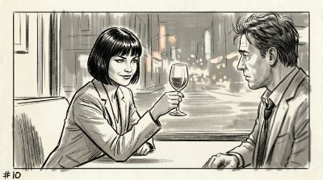
[She smiled because she knew me well.]
“I've been telling you that for twenty years.”
“I know.”
“To get an outside view.”
“I know.”
“When you're stuck.”
“I know, Sandra.”
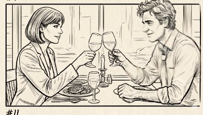
“Are they ready to go again tomorrow?”
“They were ready before I left the desk.”
“And you.”
“I need sleep.”
“You just need more interns!”
The scene above is staged. The events were last week.
I had a frame I could not make hold. I pushed on it across several sessions. The team pushed back, but only as far as I had stated the problem. The frame kept slipping. Not because the team was wrong. Because I had not yet said the thing clearly enough for either of us to know what we were arguing about.
When I finally said it clearly, the resistance changed. The questions got sharper. That shift was the signal. I knew the frame had moved because of how the pushback moved with it.
Then I asked for an outside view. I went in for a validation pass. It told me I was overclaiming instead, and it was right. I cut the claim down. Twenty-two rounds of markup. The paper came out built on a smaller, truer spine.
If you have read this far you already know the team is not people. Here is the scene, translated:
| In the scene | What that actually was |
|---|---|
| “They knew nothing.” | A new chat starts blank. You give it the full context or it works from guesses. |
| “Positive to a degree that unsettled people.” | The model stays upbeat and agreeable. That is the reason it will ride a bad frame without flinching. |
| “One of them started to drift in a long meeting.” | A long thread fills its context. The work loosens the longer you stay in it. |
| “An outside view. Someone with no history.” | A new chat. Separate model, blank context. |
| “Lay it out again from the beginning.” | The red team gets a clean read, but you need to orient it again to the problem you wanted to solve. |
| “The pushback got more specific.” | A fresh context has no stake in the frame I built. |
| “It told me I was overclaiming.” | A reader with no stake caught the claim I was inflating. The smaller version was the true one. |
| “Treated as a babysitting problem. Run like a team.” | The tools run wild if no one directs them. Lead them and the work changes. |
Most people never get near this. They write one good prompt, take what comes back, maybe push once or twice. They use the tool to produce. They never use it to attack the work, or to attack itself. That critic is sitting right there, and it is free. The sharpest version of it is the one with no memory of what you built, because it has nothing to defend.
When you are close to done and too invested to see straight, open a blank thread in a totally different chat tool. Give it the work and the right prompt and tell it to find what is wrong. No history, no loyalty, no stake. That is the teammate who tells you the truth.
One habit inside a larger one: leading these tools like a team, not writing a prompt and walking away. → A Team You Have to Build and Lead